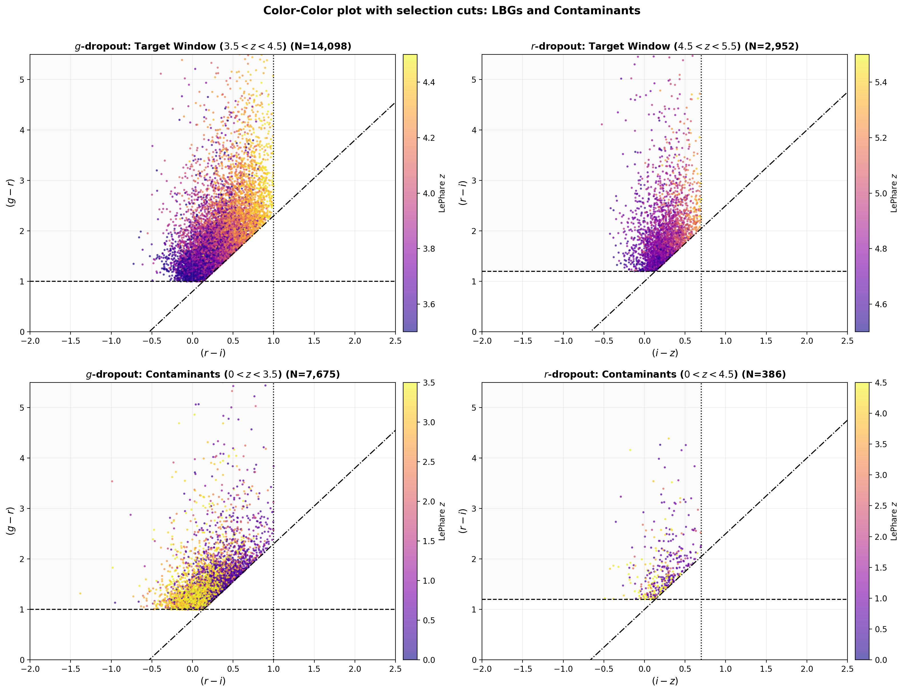
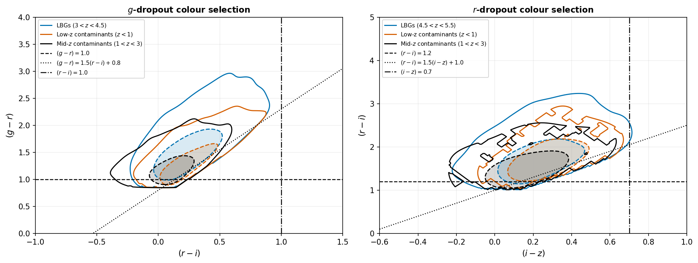
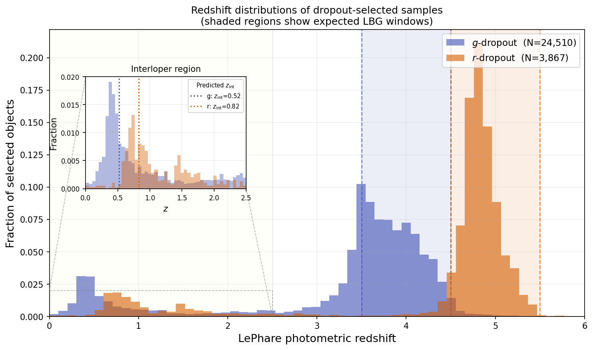
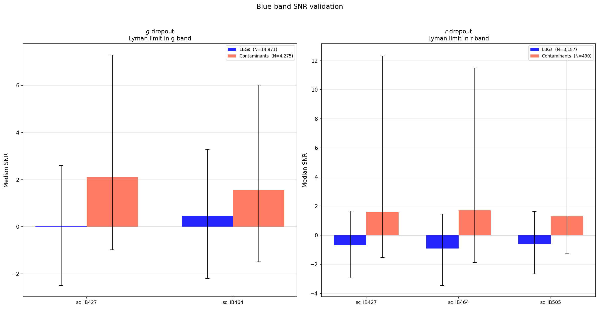

Lyman Break Galaxies are the population defined by the IGM fingerprint — young, star-forming galaxies from the universe's first two billion years, identified by the band in which they vanish. This chapter selects 28,377 of them from COSMOS2020 and asks whether the model earns its keep on the galaxies it was built for.
Finding a z ~ 4 galaxy among 400,000 objects sounds hopeless until you remember what the IGM does: it erases everything blueward of the redshifted Lyman break. At z ~ 4 that erasure lands squarely in the g filter — the galaxy "drops out" of g while shining normally in r and i. At z ~ 5 the same fate befalls r. So the hunt reduces to arithmetic on magnitudes, following the battle-tested colour cuts of Harikane et al. (2022).
Read the three cuts as a sentence: "the light collapses across the break (g−r > 1.0), stays flat after it (r−i < 1.0), and does both strongly enough (the diagonal) to escape the region where impostors live." The purity gap between lanes — 61% vs 82% — is caused by exactly one rule: r-dropouts must be invisible in g, a demand that low-redshift interlopers struggle to fake.

The selection plane itself: g−r against r−i for g-dropouts (left) and r−i against i−z for r-dropouts (right), every point coloured by its LePhare redshift. Top row: candidates inside the target window. Bottom row: colour-selected contaminants. Dashed lines trace the Harikane et al. cuts.
The physics you can see: within the LBG populations, the points form a rainbow running diagonally — higher-redshift galaxies sit further up and to the right, nearly parallel to the diagonal cut. That gradient is the Lyman break burrowing deeper into the dropout band as redshift grows: more of the filter falls behind the break, the dropout colour reddens, and position in this plane becomes a crude redshift ruler. The warning you can also see: the contaminants (bottom) occupy overlapping territory, clustered near the cut boundaries — colour cuts are a fence, not a wall, and what leaks through is the subject of the next figure.
Both samples show a second population far below the target windows — and its location is not random. A galaxy with a strong Balmer/4000 Å break can impersonate a Lyman-break galaxy: both features produce a red colour across adjacent filters. The impersonation even obeys a formula — a D4000 break lands in the dropout band when 1 + zcont = (1216/4000)(1 + zdrop), predicting contaminant peaks at z ≈ 0.52 for g-dropouts and z ≈ 0.82 for r-dropouts. The data deliver peaks at almost exactly those redshifts — a satisfying confirmation that the contamination is understood physics, not mystery noise. A further diffuse population at z ~ 1–3 clings to the cut boundaries, plausibly a mix of dust-reddened starbursts, Lyman-α-forest-dimmed galaxies, and LePhare's own catastrophic errors.

Kernel density contours (enclosing 50% and 90% of each population) replace the individual points of Figure 8.1: genuine-window LBGs in blue, the z < 1 Balmer-break suspects in orange, and the mid-z (1 < z < 3) population in black, against the same selection boundaries.
How to read the territories: the Balmer-break population forms a compact island inside the LBG region — its similar footprint is exactly what you'd expect from a spectrally analogous feature (one break masquerading as another), which is precisely why colour cuts cannot evict it. The mid-z population behaves differently: its contours press against the lower and diagonal boundaries and spill beyond the LBG locus, the signature of a heterogeneous population smeared across the threshold by dust reddening, forest absorption, or reference-redshift error. Implication: the two contaminant classes need different remedies — the first requires more wavelength leverage (blue bands), the second better reference redshifts — and the figure motivates both of the validation tests that follow.

Redshift histograms of everything the colour cuts caught: g-dropouts in blue, r-dropouts in orange, with each class's target window shaded. The inset magnifies the low-redshift regime, with dotted lines marking the D4000-formula predictions (z = 0.52 and 0.82).
The quantitative verdict: 61.4% of g-dropouts and 81.9% of r-dropouts fall inside their windows. The low-z secondary peaks sit squarely on the dotted predictions — the Balmer-break hypothesis passing its sharpest observational test. Note also the g-dropout excess at z = 3–3.5, just below the window: those are likely real LBGs whose break hasn't fully entered the g band, near-misses rather than impostors. The honest caveat, stated in the thesis: all classifications here rest on LePhare photometric redshifts, so every "contaminant" label is a hypothesis awaiting spectroscopic confirmation.

The decisive cross-examination. For a genuine z ≳ 4 LBG, the Lyman-series absorption should annihilate all flux in the intermediate bands blueward of the break — bands that played no role in the selection. The figure shows the median signal-to-noise ratio in those bands (IB427, IB464, and for r-dropouts IB505) for LBGs (blue) versus contaminants (red), with 16–84th percentile error bars.
The verdict: LBGs sit at median SNR ≈ 0 — statistically indistinguishable from blank sky, even dipping negative for r-dropouts — exactly as total Lyman absorption demands. Contaminants show persistent positive SNR ≈ 1: faint but real light where a true LBG can emit none, because a z ≈ 0.5 Balmer-break galaxy has no reason to be dark at 4300 Å. Why this figure matters most in the chapter: it is an independent confirmation of the contaminant classification, using data outside both the selection cuts and the reference redshifts. Two unrelated methods pointing at the same impostors is how a hypothesis starts becoming a fact.
With the sample characterised, both halves of the framework are turned loose on it — and the results split cleanly along a fault line worth understanding.
The population model gets better. Retrained on the dropouts, median residuals tighten toward zero in most filters versus the full catalogue. And when trained on g- and r-band LBGs separately, the residual width in the break filter itself collapses — σ drops to 0.82 in HSC g for g-dropouts and 0.70 in HSC r for r-dropouts, the best per-filter figures anywhere in the thesis. The reason is homogeneity: every galaxy in the training set carries the same dramatic feature in the same filter, so the model finally gets to specialise.
The redshift estimator has a harder time — for a reason the physics predicts. A z ~ 4 galaxy offers only one-sided information: everything blueward of the break is gone, leaving a flatter, more degenerate χ² surface. However, comparing with the stratified disgnostic plot of the entire sample in the specific redshfit ranges shows significant improvements when run on only dropouts. The numbers tell the story:
| Population | Method | σNMAD | Outliers |
|---|---|---|---|
| g-band LBGs z 3.5–4.5 · N = 15,054 |
PCA, no prior | 0.5030 | 57.2% |
| PCA, with prior (trained on this population) | 0.1573 | 39.4% | |
| EAZY | 0.0307 | 4.6% | |
| r-band LBGs z 4.5–5.5 · N = 3,167 |
PCA, no prior | 0.2974 | 77.1% |
| PCA, with prior | 0.2008 | 46.1% | |
| EAZY | 0.0208 | 0.8% | |
| Colour-selected contaminants 0 < z < 1 · N = 3,339 |
All methods degrade — EAZY worst at σ = 1.38 | 0.57–1.65 | 65–86% |
Three lessons hide in that table. First, the prior matters far more here than on the full sample — trained on the dropout population itself, it more than triples the no-prior accuracy for g-LBGs, a preview of what a proper population-model prior could deliver everywhere. Second, EAZY thrives on the break: with a strong spectral anchor and well-matched templates it reaches 0.8% outliers on r-LBGs — its best performance anywhere. Third, everything fails on the contaminants, and the failure has a fingerprint: 84% of contaminant redshifts are predicted higher than LePhare's — precisely the direction the Balmer↔Lyman degeneracy pushes, since a Balmer break at z ≈ 0.5 photometrically mimics a Lyman break at z ≈ 4. Even the failure mode corroborates the physics.